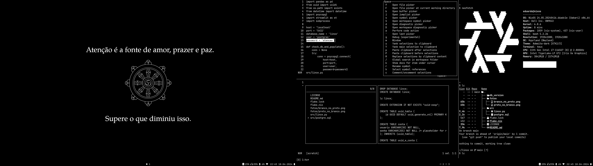

My NixOS configuration - GitHub
NixOS is a Linux distribution that uses the Nix Programming Language to configure the system in a declarative way. To install NixOS you can follow the instructions at the official website. There's a graphical installer, that you can close when the booted environment loads, to install through terminal if preferred.
With nixos, all your system configuration can be completely replicated with one or a few commmands. You must have the files that the configuration will base itself on, and type the command to build the system on top of them.
configuration.nix
My setup uses flakes and home-manager. To understand more about these two mutations I recommend looking at YouTube videos and following along.
Just like every snowflake is unique, so aren't nix flakes if you dont wan't them to be. They can be an exact copy of another person's flake. Quoting the explanation of Nix Flakes "Nix flakes provide a standard way to write Nix expressions (and therefore packages) whose dependencies are version-pinned in a lock file, improving reproducibility of Nix installations."
flake.nix
Home manager is awesome, it lets you declare your home configuration, using .nix to centralize all your packages configurations in a single file. Search through the file, I believe you will find one or more programs or type of programs you use daily.
home.nix
So after all that configuration, more than a thousand generations of the NixOS config later, a personalized computer experience is born. After changing 100 lines here, one line there, a perfectly stable, reproductible system with the biggest quantity of fresh packages is arrived at.